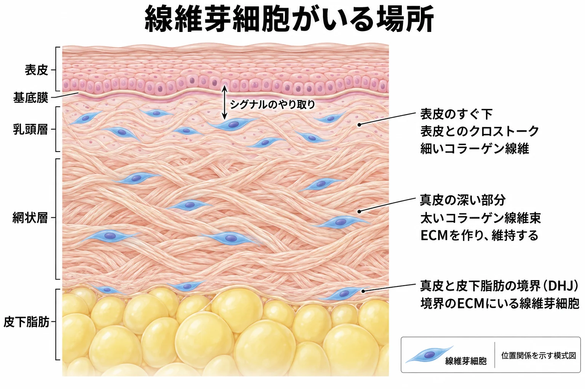
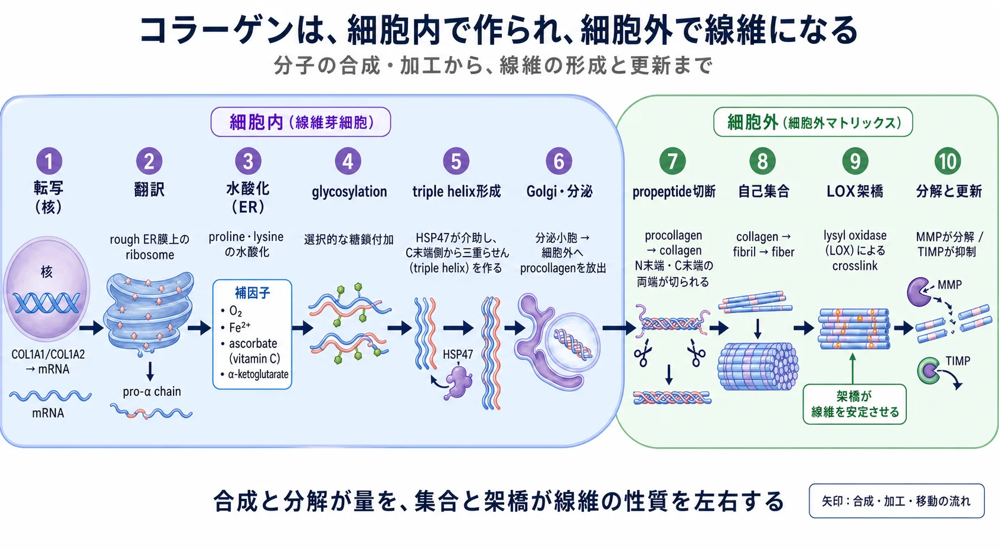
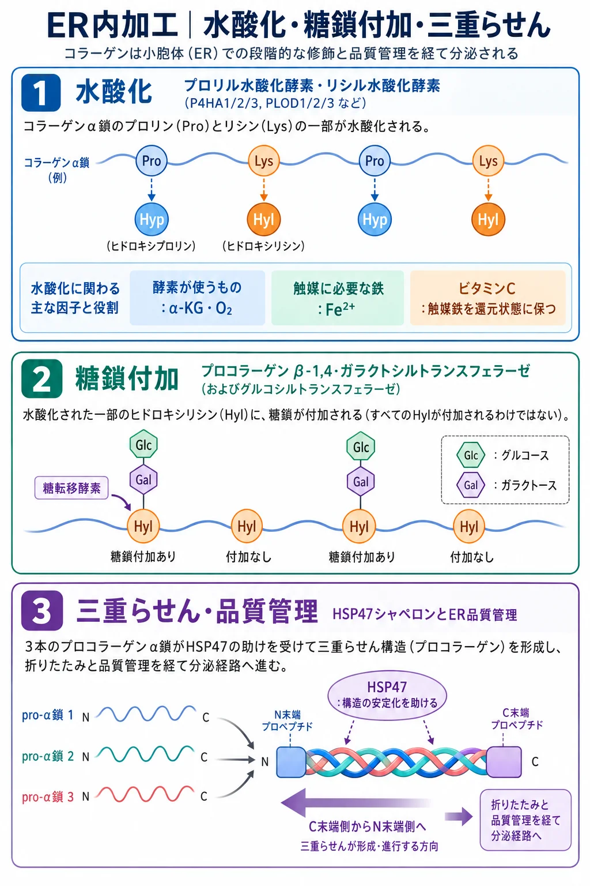
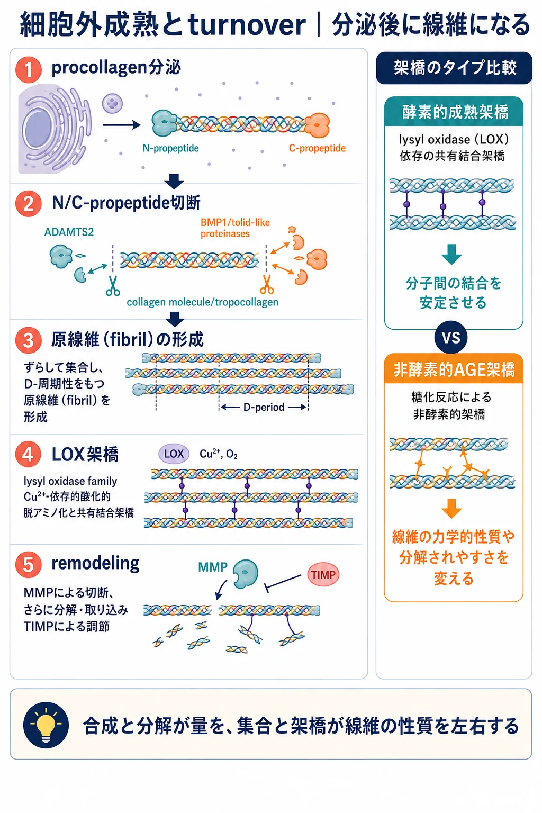

美容皮膚科 ／ 組織の生化学
線維芽細胞とコラーゲン
公開 2026-09-15
線維芽細胞は、真皮のECMを作り、維持する細胞です。コラーゲンをはじめ、弾性線維の成分や、水分を保持する成分などを作ります。
ここではまず、線維芽細胞の場所による働きの違いを見ます。そのうえで、作られる成分の一つであるコラーゲンに注目します。真皮の強さを支え、加齢や創傷治癒、美容施術後の組織の変化を理解するうえで重要な成分だからです。細胞内で分子が作られ、細胞外で線維に組み立てられ、更新されるまでを見ていきます。
この章の一言
線維芽細胞は真皮のECMを作り替えます。その産物の一つであるコラーゲンは、細胞外で線維に組み立てられ、皮膚を支えます。
1 線維芽細胞は、真皮のECMを作り替える
線維芽細胞（fibroblast）は、真皮の線維の間に存在する細胞です。周囲のECMに接着して広がり、コラーゲンやfibronectin、proteoglycanなどの成分を作ります。さらに、ECMを分解する酵素や、周囲の細胞へ働きかける成長因子も分泌します。材料を作る働きと、既存の構造を分解する働きの両方で、真皮を更新しています。
線維芽細胞は、常に同じ量のコラーゲンを作るわけではありません。どこにいるか、どのような状態にあるかによって、作るECMや周囲への働きかけが異なります。 場所による違いと、細胞の状態による違いを見ていきます。
乳頭層・網状層・脂肪との境界で、環境が違う
真皮の浅い部分が乳頭層、深い部分が網状層です。さらにその下で、真皮は皮下脂肪と接します。同じ真皮の線維芽細胞でも、周囲の線維の組み方や、接する細胞が異なります。

| 場所 | 主な働き・特徴 |
|---|---|
| 乳頭層：表皮のすぐ下 | 表皮とシグナルをやり取りし、角化細胞の増殖・分化や表皮の形成を支えます。表皮直下の細い線維を含むECMも維持します |
| 網状層：真皮の深い部分 | 太いコラーゲン線維束を含むECMを作り、真皮の強さを支えます。創傷では、深い部分の欠損を補うECMの形成や組み替えに関わります |
| DHJ：真皮と皮下脂肪の境界 | 境界部分のECMを作り、構造を保つ役割が考えられています。乳頭層・網状層の細胞とは収縮や分化の性質が異なりますが、皮膚の中での詳しい役割は研究中です |
表皮とは、双方向にシグナルをやり取りする
乳頭層の線維芽細胞は、表皮のすぐ下で角化細胞とクロストーク（双方向のシグナルのやり取り）を行います。表皮からの刺激を受け、成長因子などを介して角化細胞の増殖・分化を支えます。これが、乳頭層が表皮を支える働きの一つです。
例えば培養系では、角化細胞が出すIL-1を受けて線維芽細胞がKGF（FGF7）を増やし、KGFが角化細胞の増殖と表皮形成を促す関係が示されています。このやり取りは網状層の細胞にもありますが、分泌する因子や表皮形成を支える能力には違いがあります。Maas-Szabowskiら, 2000、Sorrellら, 2004
創傷治癒では、真皮を補う働きと表面を再建する働きがつながる
傷ができると、深い部分には新しいECMが作られ、表面には角化細胞が広がって表皮を再形成します。線維芽細胞は、真皮の欠損を補うことと、表皮の再形成を支えることの両方に関わります。
マウスで細胞の由来を追った研究では、網状層・皮下組織に由来する深層の細胞が先に創部へ入り、初期のECM形成を担いました。浅層の細胞は再上皮化の時期に加わり、乳頭層の再構築に寄与しました。部位によって、修復に加わる時期と役割も異なることを示します。Driskellら, 2013
ヒトでも乳頭層由来細胞の表皮形成を支える能力は示されていますが、この修復の順序をそのまま当てはめられるかは研究中です。創傷治癒全体の流れは炎症と創傷治癒で扱います。
詳しく：部位による機能の違いを調べた研究
乳頭層・網状層の比較では、乳頭層由来細胞が表皮形成をより強く支えることや、網状層に多い細胞集団が誘導培養で脂肪細胞へ分化しやすいことが報告されています。Mineら, 2008、Korosecら, 2019
DHJは、真皮と皮下脂肪が接する領域です。Haydontらは、この場所から取り出したヒトの細胞を、乳頭層・網状層の線維芽細胞と同じ条件で培養して比較しました。
一つ目は、周囲のコラーゲンを引っ張る働きの違いです。 細胞をコラーゲンゲルの中で培養すると、乳頭層・網状層由来の細胞はゲルを縮めました。一方、DHJ由来の細胞では、この収縮が認められませんでした。ECMを作る細胞でも、それを引っ張って縮める能力は同じではない、という結果です。
二つ目は、分化を誘導したときに変化できる幅の違いです。 DHJ由来細胞は、乳頭層・網状層由来細胞より広い間葉系の分化能力を示しました。ただし、これは特定の培養条件で調べた能力で、通常の皮膚で同じ分化が起こっていることを示すものではありません。脂肪や骨髄などに由来する間葉系幹／間質細胞（MSC）と同じ細胞でもありません。
この研究から分かるのは、DHJの細胞は、ほかの真皮線維芽細胞と比べて、収縮や分化への応答が異なることです。実際の皮膚で担う役割の全体像や、この細胞への刺激がたるみを改善するかまでは、この結果から決められません。Haydontら, 2020
加齢で、乳頭層の特徴と表皮を支える働きが弱まる
若い皮膚の乳頭層由来細胞は、よく増殖し、表皮の形成を支える能力を持ちます。高齢ドナーの細胞では、この増殖能力や表皮形成を支える能力が低下し、若いときにみられた網状層由来細胞との違いが小さくなります。加齢の影響は、コラーゲンの量だけでなく、真皮が表皮を支える働きにも及びます。Mineら, 2008
ヒト皮膚の単一細胞解析でも、高齢の乳頭層の線維芽細胞は、乳頭層らしい遺伝子発現が弱まり、網状層に近い特徴を示しました。一方、網状層側でも本来の特徴が弱まっていました。これは、部位ごとの性質の違いが不明瞭になる変化です。Solé-Boldoら, 2020
筋線維芽細胞は、収縮する働きが強まった状態
創傷治癒などでは、線維芽細胞の一部が筋線維芽細胞（myofibroblast）へ変化します。ECMを作る働きに加え、細胞内の収縮装置が発達し、周囲のECMを強く引いて創を縮めることに関わります。筋肉の細胞そのものになる、という意味ではありません。
代表的な特徴は、α-SMA（α-smooth muscle actin）がactin線維束に組み込まれることです。TGF-βや周囲の張力などが、この収縮性の高い状態を支えます。修復には必要ですが、収縮とECM産生が持続すると、瘢痕の引きつれや線維化に関わります。収縮機構と修復の経過は細胞外基質（ECM）、炎症と創傷治癒で扱います。Hinzら, 2001
線維芽細胞には部位ごとの特徴があり、創傷などの状況に応じて働きの状態も変わります。
ここからは、線維芽細胞が作るECM成分のうち、コラーゲンがどのように分子から線維になるかを見ていきます。ECMの構成成分とそれぞれの役割は細胞外基質（ECM）で扱います。
2 コラーゲンの「分子」と「線維」を分ける
コラーゲンは、3本のタンパク質の鎖が巻き合った三重らせんを基本とするタンパク質群です。真皮のI型・III型では、分子がずれて並んで原線維（fibril）を作り、それが集まって線維（fiber）や線維束になります。
「コラーゲンを作る」には、分子を合成する工程と、その分子を細胞外で組み立てる工程があります。まず、細胞内から細胞外へ続く全体の流れを示します。

I型とIII型は、別の種類のコラーゲン
I型とIII型は、異なる遺伝子から作られる別の分子です。どちらも成人の正常真皮にあり、線維を構成します。
| 型 | 分子の構成 | 皮膚での役割 |
|---|---|---|
| I型（type I） | 通常、COL1A1由来のα1(I)鎖2本とCOL1A2由来のα2(I)鎖1本 | 成人真皮のcollagenの主成分。線維束を構成し、引っ張る力に耐える組織を支える |
| III型（type III） | COL3A1由来のα1(III)鎖3本 | I型とともに線維を構成し、原線維の形成や太さの調節に関わる。成人の正常真皮にも存在する |
III型を欠損させたマウスでは、皮膚などでI型collagenの原線維形成に異常が生じました。III型には、線維を構成するとともに、その組み立てを調節する役割があります（Liuらの遺伝子欠損研究）。
I型とIII型は、それぞれの分子として合成され、その後に加工・集合・架橋を経て線維を作ります。「型」は分子の種類、「成熟」は組み立てが進む過程を表します。
詳しく：胎児の皮膚、加齢、創傷で変わるI型とIII型
「赤ちゃんの柔らかいコラーゲン」という説明の背景には、胎児の皮膚では成人皮膚よりIII型の割合が高いという知見があります。ヒト胎児皮膚と成人皮膚を比較した研究でも、この差が確認されています（Smithらのヒト皮膚研究）。ただし、皮膚全体の柔らかさには、collagenの構成に加えて線維の太さ・配列・架橋、水分やほかのECM成分も関わります。III型だけで赤ちゃんの皮膚の柔らかさを説明することはできません。
年齢とともにIII型の量が減り、I:III比が高くなると報告したヒト研究もあります。一方、成人の若年群と高齢群でIII:I比に差を認めなかった研究もあります。胎児から成人への発達の変化と、成人以降の老化は区別し、III型の量と全collagenに占める割合も分けて見ます。 年齢層・採取部位・紫外線曝露・測定法によって結果は変わるため、III型の割合が年齢とともに一律に下がるとは扱いません（Rongらの年齢群比較・Brinckmannらの加齢研究）。
創傷初期の修復組織では、I型とともにIII型も作られ、III型の相対的な割合が高まることがあります。その後の分解と再合成によって、組織を構成する型の割合や線維の配列・架橋が変化します。修復の時間経過は炎症と創傷治癒で扱います。
3 細胞内で、鎖を作り三重らせんにする
I型ではCOL1A1・COL1A2、III型ではCOL3A1が転写され、mRNAをもとにタンパク質の鎖が翻訳されます。鎖は作られながら粗面小胞体（rough ER）の内腔へ入り、加工を受けます。転写・翻訳の基本はDNAからタンパク質までで扱います。
水酸化・糖鎖付加・三重らせん形成
小胞体内では、鎖に含まれるprolineやlysineの一部が水酸化されます。prolineはhydroxyprolineへ、lysineはhydroxylysineへ変わります。これはアミノ酸を鎖へ組み込んだあとの加工です。
hydroxyprolineは三重らせんの安定性に、hydroxylysineは糖鎖付加や細胞外での架橋の性質に関わります。hydroxylysineの一部には糖が付き、3本の鎖はC末端側から三重らせんを形成します。
両端にpropeptide（プロペプチド）を持つこの前駆体が、procollagen（プロコラーゲン）です。折りたたみや品質管理を経て、Golgiから分泌経路へ進みます。

詳しく：鎖の並びと、HSP47による構造の安定化
コラーゲンの三重らせん領域では、Gly–X–Yという配列が繰り返されます。小さいglycineが3残基ごとにあることで、3本の鎖が近接できます。X・Yにはprolineやhydroxyprolineが多く現れますが、鎖はほかのアミノ酸も含みます。
C末端のpropeptideが鎖の組み合わせと会合に関わり、らせん形成はC末端側からN末端側へ進みます。HSP47はコラーゲンに特異的な分子シャペロンで、三重らせんの安定化や異常な凝集の防止に関わります。
HSP47を欠くマウス由来細胞では、小胞体内のコラーゲン凝集、分泌の遅延、分泌後の加工や原線維形成の異常が示されています。HSP47の存在は工程を支えますが、その発現だけで完成した線維の量が分かるわけではありません。Ishidaら, 2006
ビタミンCは、水酸化酵素が働く状態を保つ
水酸化酵素は、酸素とα-ketoglutarate（α-KG）を使い、活性中心に鉄を必要とします。ascorbate（ビタミンC）は、この触媒鉄を還元状態に保ち、酵素の働きを支えます。 ビタミンCが不足するとコラーゲンの正常な形成が障害され、壊血病でみられる出血傾向や創傷治癒の障害につながります。
詳しく：水酸化で使うものと、酵素を支えるもの
prolyl 4-hydroxylaseとlysyl hydroxylaseは、α-KG依存性の酸素添加酵素です。水酸化に伴い、α-KGからsuccinateとCO₂が生じます。鉄は触媒として働きます。
水酸化酵素の活性中心にある鉄は、Fe²⁺の状態で反応に参加します。副反応によって鉄がFe³⁺の状態になると、酵素の働きが低下します。ascorbateはこの鉄をFe²⁺へ還元し、酵素が再び働けるようにします。Myllyläら, 1984
翻訳にはアミノ酸とATP・GTP、加工や分泌には小胞体と輸送系の働きも必要です。コラーゲンの産生は、一つの材料や補因子だけで決まるものではありません。
4 細胞外で、分子を線維へ組み立てる
分泌されたprocollagenは、両端のpropeptideが切断され、原線維を形成できる分子になります。分子がずれて並び、さらに分子同士の架橋（cross-link）が形成されることで、線維の構造が安定します。

架橋の開始に関わる酵素が、lysyl oxidase（LOX）です。銅と酸素を必要とし、lysineやhydroxylysineの一部を、架橋の反応が進む形へ変えます。分泌量に加えて、分子がどう集合し、結びついたかが線維の性質を左右します。
詳しく：切断・集合・架橋で何が変わるのか
切断：I型procollagenのN末端側はADAMTS2など、C末端側はBMP1などの酵素が加工します。propeptideを取り除いた分子はtropocollagenとも呼ばれます。
集合：分子が一定のずれを持って並ぶため、原線維には約67 nmの周期的な縞模様（D周期）が現れます。生体内では、細胞表面やfibronectinなどの周囲の分子も組み立てに関わります。
架橋：LOXはlysine・hydroxylysineを酸化的に脱アミノ化し、それぞれallysine・hydroxyallysineというアルデヒドを生じさせます。そこを起点として分子間の結合が形成されます。LOXは架橋反応の開始を担い、最終的な結合の形成にはその後の反応が続きます。
酵素的な架橋とは別に、糖化によるAGE架橋もあります。架橋の種類や位置は、線維の硬さや分解されやすさを変えます（→ 糖化とAGE）。
製剤の名称を読む：由来・アテロ化・組換えと安全性
コラーゲンの分子構造は、医療材料として加工するときにも重要です。製剤の名称には、原料の由来、作り方、分子への加工という異なる情報が含まれています。
| 表現 | 何を意味するか | 安全性を読むときの確認点 |
|---|---|---|
| 牛・豚などの動物由来 | 動物の組織からコラーゲンを取り出す | 異種タンパク質へのアレルギー、原料動物・組織の管理、病原体の除去・不活化。アレルギー検査の要否は製品の添付文書で確認する |
| ヒト由来 | ヒト組織から抽出するものや、ヒト細胞を培養して作らせるものがある | 組織提供者や細胞の由来・検査、培養と精製の工程、病原体管理。どの製法かを確認する |
| 組換えヒトコラーゲン | ヒトコラーゲンの遺伝子情報を使い、酵母などの生産細胞に作らせる | 配列・分子の長さ・三重らせん、生産細胞由来の残留タンパク質やDNA、エンドトキシンなどの管理 |
| アテロコラーゲン | コラーゲンの両端のテロペプチドを除く加工をしたもの | 原料の由来を別に確認する。アテロ化は抗原性を減らす加工で、病原体管理は別途必要 |
| 「合成」「人工」「ヒト型」などの表示 | 表示だけでは、組換え製造・化学合成・配列の改変などの詳細が分からない | 正式な成分名、製法、全長か断片か、ヒト配列との関係を製品資料で確認する |
アテロ化で取り除くのは、三重らせんの両端にある短い部分です。 コラーゲン分子は「テロペプチド — 長い三重らせん — テロペプチド」という構造を持ちます。ペプシンなどで両端を除き、三重らせんを保ったものがアテロコラーゲンです。テロペプチドは動物種による配列の違いと抗原性に関わるため、除去によって免疫反応を減らすことを狙います。Holmesら, 2017
例えば「ブタ由来アテロコラーゲン」は、ブタを原料にして、テロペプチドを除いたものです。「アテロ」は加工、「ブタ由来」は原料を表します。生体内でprocollagenが成熟するときに切り離されるpropeptideは、さらに外側にある別の部位です。
感染症は、原料からの病原体持ち込みと、製造・注入時の汚染を分けて考えます。 動物由来では、動物種・採取組織に応じたウイルスなどの管理が必要で、牛由来ではBSEなどのTSE因子も評価対象になります。これは管理すべきリスクの説明であり、製品からの感染頻度を示すものではありません。FDA：動物由来材料の管理
ヒト由来でも原料・細胞と製造工程の管理が必要です。例えば、培養ヒト線維芽細胞から作るコラーゲン製剤のFDA審査資料では、生産細胞のウイルス検査、精製工程でのウイルス除去・不活化、最終製品の無菌性などが評価されています。FDA：ヒト細胞由来コラーゲンの審査資料
組換え製造には、原料となる動物・ヒト組織の採取に伴うリスクを減らせる利点があります。 一方、製造に使った細胞のタンパク質やDNA、工程由来の不純物などを除去し、品質を管理します。組換えコラーゲンでも、配列や構造は製品によって異なります。Liuら：組換えコラーゲンの規制評価, 2022
三重らせんを安定させるには、水酸化などの加工も重要です。酵母でヒトコラーゲンを作る研究では、水酸化酵素を一緒に発現させる方法が使われています。Vuorelaら, 1997
使用時は、正確な製品名・由来と製法・添加物や架橋剤・注入用途での承認と臨床データを確認します。注入に伴う感染や血管閉塞などは、材料の由来に加えて、投与部位・方法にも関わります。製品としての安全性は、これらを合わせて評価します。FDA：注入用フィラーのリスク
5 分解と再合成で、線維を維持する
線維芽細胞は、コラーゲンを作るとともに、それを分解する酵素も出します。その一つが、MMP（matrix metalloproteinase）というECM分解酵素群です。例えばMMP-1は、I型・III型などの線維性コラーゲンの切断に関わります。切断された分子はさらに分解され、細胞による取り込みと処理も受けます。TIMPはMMPの活性を抑えるタンパク質です。
正常な更新には分解も必要です。組織に残るコラーゲン量は、合成されて組織へ加わる量と、分解・除去される量の差で変わります。成熟は、合成と別に量を足す工程ではなく、作られた分子を加工し、機能する構造にする過程です。
コラーゲンが断片化すると、線維芽細胞の接着や広がりが変わり、産生にも影響します。細胞と周囲の構造が互いに影響する関係は細胞外基質（ECM）で扱います。
6 紫外線は、合成と分解の両方に影響する
慢性的な紫外線曝露は、真皮のコラーゲンを損なう重要な要因です。紫外線に伴って活性化されるAP-1は、procollagenの遺伝子発現を抑え、MMPの発現を増やす方向に働きます。TGF-βのシグナルも変化し、コラーゲン産生が低下します。Fisherら, 2000
詳しく：作る量を調節するTGF-βと、紫外線への応答
TGF-βは受容体からSMADを介して、コラーゲン産生に関わる遺伝子発現を調節します。紫外線照射後のヒト皮膚や培養細胞では、AP-1の構成因子c-Junの増加とprocollagen転写の低下、TGF-β受容体II・SMAD経路の障害が示されています。Fisherら, 2000、Quanら, 200463337-8)
紫外線の影響は、線維の切断だけでなく、作り手の細胞の応答にも及びます。DNA損傷や酸化ストレスは酸化ストレスと抗酸化で扱います。
真皮の変化を理解するには、線維芽細胞が分子を作る過程、その分子が線維になる過程、作られた線維が維持される過程をつなげて見る必要があります。
この章の到達点
- 線維芽細胞は真皮の維持と修復を担い、場所や状態で性質が異なります。乳頭層・網状層・DHJでの働きの違いと、筋線維芽細胞への変化を説明できます。
- I型とIII型は異なるコラーゲンです。どちらも合成後に加工・集合・架橋を経て、線維を作ります。
- 小胞体内で水酸化・糖鎖付加・三重らせん形成が進み、procollagenとして分泌されます。
- 細胞外の切断・集合・架橋を経て、分子が原線維や線維へ組み立てられます。
- 組織に残る量は合成と分解・除去の関係で変わり、線維の性質には配列や架橋も関わります。
参考文献
- Smith LT, Holbrook KA, Madri JA. Collagen types I, III, and V in human embryonic and fetal skin. Am J Anat. 1986;175(4):507–521. PMID 3521252. DOI: 10.1002/aja.1001750409.
- Liu X, et al. Type III collagen is crucial for collagen I fibrillogenesis and for normal cardiovascular development. Proc Natl Acad Sci U S A. 1997;94(5):1852–1856. PMID 9050868. DOI: 10.1073/pnas.94.5.1852.
- Rong YH, et al. [Quantification of type I and III collagen content in normal human skin in different age groups]. Zhonghua Shao Shang Za Zhi. 2008;24(1):51–53. PMID 18512563.
- Brinckmann J, et al. Analysis of the age-related composition of human skin collagen and collagens synthesized by fibroblast culture. Arch Dermatol Res. 1994;286(7):391–395. PMID 7818281. DOI: 10.1007/BF00371799.
- Driskell RR, et al. Distinct fibroblast lineages determine dermal architecture in skin development and repair. Nature. 2013;504:277–281. DOI: 10.1038/nature12783.
- Ishida Y, et al. Type I collagen in Hsp47-null cells is aggregated in endoplasmic reticulum and deficient in N-propeptide processing and fibrillogenesis. Mol Biol Cell. 2006;17:2346–2355. PMID: 16525016.
- Myllylä R, et al. Ascorbate is consumed stoichiometrically in the uncoupled reactions catalyzed by prolyl 4-hydroxylase and lysyl hydroxylase. J Biol Chem. 1984;259:5403–5405. PMID: 6325436.
- Fisher GJ, et al. c-Jun-dependent inhibition of cutaneous procollagen transcription following ultraviolet irradiation is reversed by all-trans retinoic acid. J Clin Invest. 2000;106:663–670. DOI: 10.1172/JCI9362.
- Quan T, et al. Solar ultraviolet irradiation reduces collagen in photoaged human skin by blocking transforming growth factor-β type II receptor/Smad signaling. Am J Pathol. 2004;165:741–751. DOI: 10.1016/S0002-9440(10)63337-863337-8).
- Philippeos C, et al. Spatial and single-cell transcriptional profiling identifies functionally distinct human dermal fibroblast subpopulations. J Invest Dermatol. 2018;138:811–825. DOI: 10.1016/j.jid.2018.01.016. PMID: 29391249.
- Haydont V, et al. Fibroblasts from the human skin dermo-hypodermal junction are distinct from dermal papillary and reticular fibroblasts and from mesenchymal stem cells and exhibit a specific molecular profile related to extracellular matrix organization and modeling. Cells. 2020;9:368. DOI: 10.3390/cells9020368. PMID: 32033496.
- Hinz B, et al. Alpha-smooth muscle actin expression upregulates fibroblast contractile activity. Mol Biol Cell. 2001;12:2730–2741. PMID: 11553712.
- Mine S, et al. Aging alters functionally human dermal papillary fibroblasts but not reticular fibroblasts: a new view of skin morphogenesis and aging. PLoS One. 2008;3:e4066. DOI: 10.1371/journal.pone.0004066. PMID: 19115004.
- Korosec A, et al. Lineage identity and location within the dermis determine the function of papillary and reticular fibroblasts in human skin. J Invest Dermatol. 2019;139:342–351. DOI: 10.1016/j.jid.2018.07.033. PMID: 30179601.
- Solé-Boldo L, et al. Single-cell transcriptomes of the human skin reveal age-related loss of fibroblast priming. Commun Biol. 2020;3:188. DOI: 10.1038/s42003-020-0922-4. PMID: 32327715.
- Maas-Szabowski N, et al. Keratinocyte growth regulation in defined organotypic cultures through IL-1-induced keratinocyte growth factor expression in resting fibroblasts. J Invest Dermatol. 2000;114:1075–1084. PMID: 10844548.
- Sorrell JM, et al. Site-matched papillary and reticular human dermal fibroblasts differ in their release of specific growth factors/cytokines and in their interaction with keratinocytes. J Cell Physiol. 2004;200:134–145. PMID: 15137066.